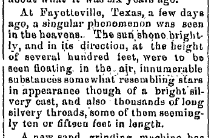

Huntingdon Globe de Pennsylvanie (journal de la guerre civile en Pennsylvanie), 2 décembre 1868 Guenther, Daniel: "1868: Fall of 'angel hair'", Magonia Exchange, 9 mai 2007
| Home |
|---|
|  |
(...)
A Fayetteville, au Texas, il y a quelques jours, un phénomène singulier a été vu dans les cieux. Le soleil luisait brillamment, et dans sa direction, à hauteur de plusieurs centaines de pieds, furent vues flottant dans l'air d'innombrables substances ressemblant quelque peu à des étoiles en apparence bien que dégageant un aspect brillamment argenté, ainsi que des milliers de longs fils argentés, dont certains semblaient faire 10 ou 15 pieds de long.
(...)
| Home |
|---|